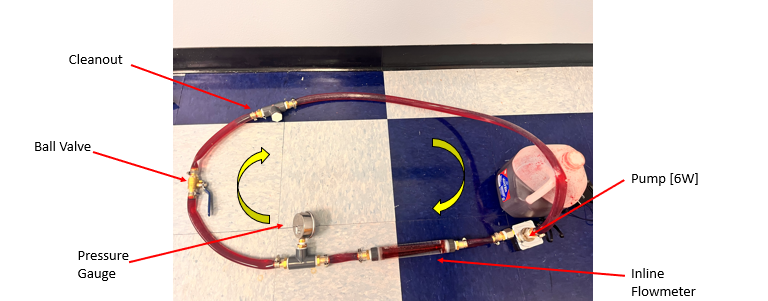
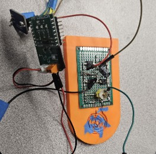
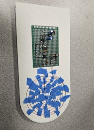

Selected work · 03
LVAD Project
- Summary
- Designed a wireless Left Ventricular Assist Device (LVAD) concept for improved patient mobility and quality of life.
- Role
- Mechanical Engineering team member focusing on pump design and experimental validation systems.
- Challenges
- There were two key challenges for this project. One was finding a pump that could run on lower power levels while still providing the necessary flow rates. The team ws restricted to only transferring low power levels due to FDA safety regulations. Locating a pump that was capable of this was a challenge, however, a discontinued PC water cooling pump was found that met the requirements. The second challenge was desinging a modular system that closely mimicked a real cardiovascular system. This was important to ensure that the pump was tested in a realistic environment and that the results were valid. A water-polymer mixture was used to mimic blood viscosity and a modular system was designed to match the fluid state at the inlet of the aorta.
- Results
- The wireless LVAD concept was successfully designed and tested. Consistent power outputs could not ab achieved, however, the pump was able to run on low power levels and provide adequate flow rates. The modular system effectively mimicked the cardiovascular environment, allowing for valid experimental results. The pump was only flooded twice.
Project visuals


